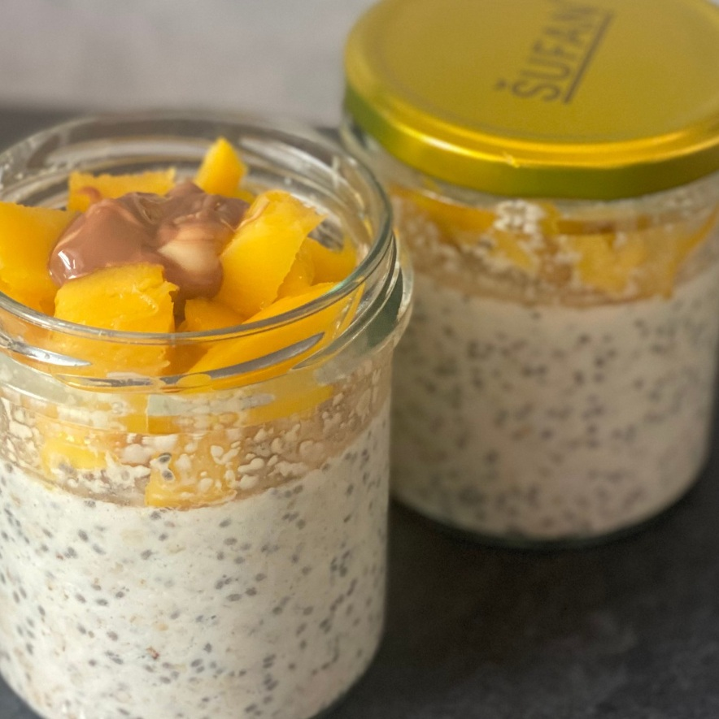

Overnight oats


Ingredience na 1 porci
- 50 g ovesných vloček
- 10 g chia semínek
- 15 g vanilkového proteinu
- 1/2 kelímku řeckého jogurtu (70g)
- polotučné mléko
- 10 g kokosu
- mango
- lžička ořechového másla
Postup
Ve skleničce smíchám všechny suché ingredience, následně přidám jogurt a doředím mlékem do tekutější konzistence. Uzavřu a dám přes noc do lednice. Ráno přidám navrch nakrájené mango a lžičku ořechového másla.